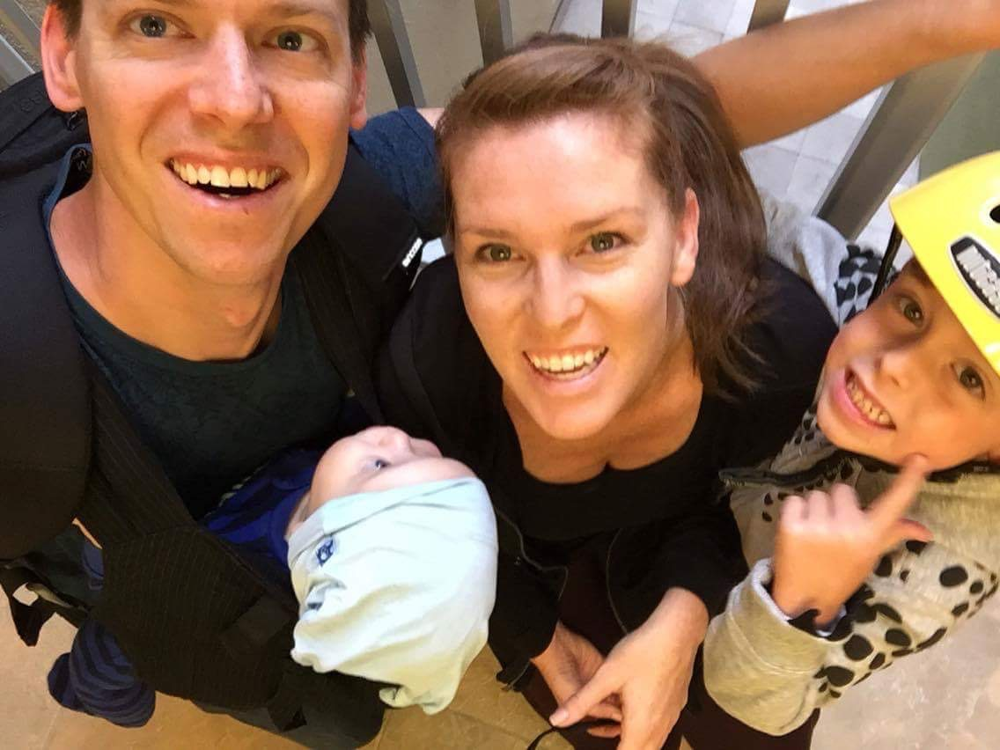

Sonja Rasmussen
Sonja Rasmussen, a former member of the Social Democratic Party Just after the 2009 local election, Rasmussen became an Independent and was elected as the new mayor with the support of the right-wing parties. The main town and the site of its municipal council is the town of Kerteminde. Once upon a time blah blah bibity blah. Dogs, cats and kangaroos like to eat stuff that tastes bad. Just typing to test out the fit of my picture. Wondering if there is a better way to size all this stuff.